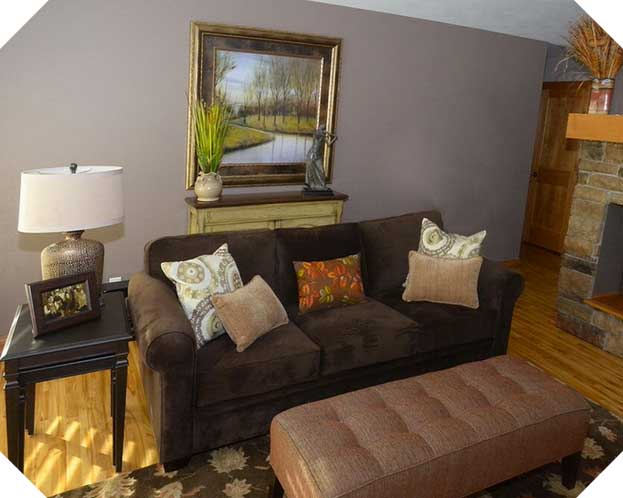

The Classic Portfolio Site
Maggie May Interiors is a small, one-woman interior design company based in the greater Minneapolis/St. Paul, MN area. My challenge was to create a sophisticated, professional brand and website to provide potential customers with information about Maggie, her work, and her specialty areas.
Project Features
- Reponsive, custom HTML5 and CSS3 Site
- Image Gallery
- Logo Design & Branding
Challenges
Responsive Navbar

To adapt the site to smaller browsers, I implemented and customized the Javascript plugin Responsive Nav.
Beveled Images

The angled corners on the home image are created with CSS3’s new multiple backgrounds feature to overlay the white corners over the image, allowing easy updates to the image.